Versión 1.0 · Noviembre de 2026
Sistema de control de ventas, compras, inventario y finanzas para distribuidores de cemento.
Contenido
- Primer ingreso
- El panel de control
- Ventas
- Compras
- Inventario y ajustes
- Caja y bancos
- Cuentas por cobrar
- Cuentas por pagar
- Cartera y flujo de caja
- Costeo mensual
- Estados financieros
- Datos y respaldos
- Configuración
- Uso desde el celular
- Buenas prácticas y preguntas frecuentes
1. Primer ingreso
Abre la dirección que te entregó el administrador (por ejemplo http://127.0.0.1:8787). Verás la pantalla de acceso con el nombre de tu empresa.
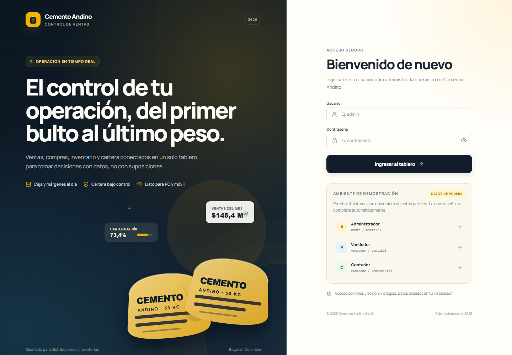
Pantalla de inicio de sesión con acceso a los perfiles de demostración.- Escribe tu usuario y contraseña.
- Pulsa Ingresar al tablero.
- En la instalación de demostración puedes usar uno de los perfiles precargados:
| Rol | Usuario | Contraseña |
|---|---|---|
| Administrador | admin |
admin123 |
| Vendedor | vendedor |
venta123 |
| Contador | contador |
contador123 |
Importante: las cuentas de demostración son públicas. Cambia las contraseñas antes de registrar información real. Cada usuario puede hacerlo desde el menú de su perfil, arriba a la derecha, en Seguridad de la cuenta.
La sesión permanece activa durante 12 horas. Si no tienes permiso para un módulo, la opción no aparece en el menú.
2. El panel de control
El Panel de control resume el estado de la operación del mes seleccionado. Puedes cambiar el período con el selector de la esquina superior derecha o pulsar Actualizar para recalcular con los datos más recientes.
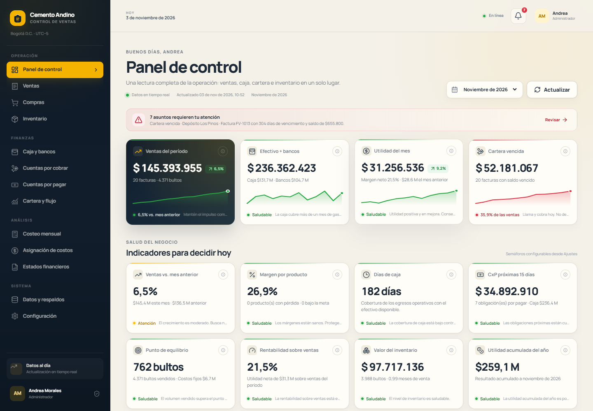
Vista principal del panel: ventas, caja, utilidad y cartera vencida.Cada tarjeta tiene un punto de color, un valor y una recomendación. El botón de información (ⓘ) de cada indicador explica la fórmula utilizada y qué hacer cuando la alerta está en rojo.
- Verde: indicador saludable.
- Amarillo: requiere seguimiento.
- Rojo: requiere una acción pronta.
Los cuatro indicadores principales son ventas del período, efectivo + bancos, utilidad del mes y cartera vencida. Debajo, la sección Indicadores para decidir hoy amplía la lectura de liquidez, márgenes, punto de equilibrio, inventario y EOQ.
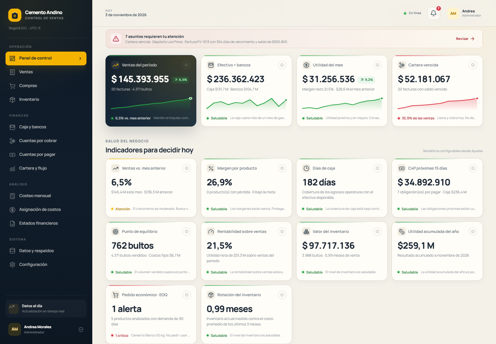
Indicadores agrupados con semáforos y acciones recomendadas.La franja de alerta superior muestra el asunto más urgente. Pulsa Revisar para ir directamente al módulo correspondiente. La campana del encabezado concentra todas las alertas.
El panel también incluye:
- Gráfica de ventas y utilidad de los últimos 12 meses.
- Participación de costos: material, flete, descargue, indirectos y 4x1000.
- Ventas por producto y por cliente: identifica concentración y márgenes.
- Política de compra EOQ: stock vs. cantidad económica de pedido, frecuencia de pedidos, costo frente al óptimo y días de faltantes.
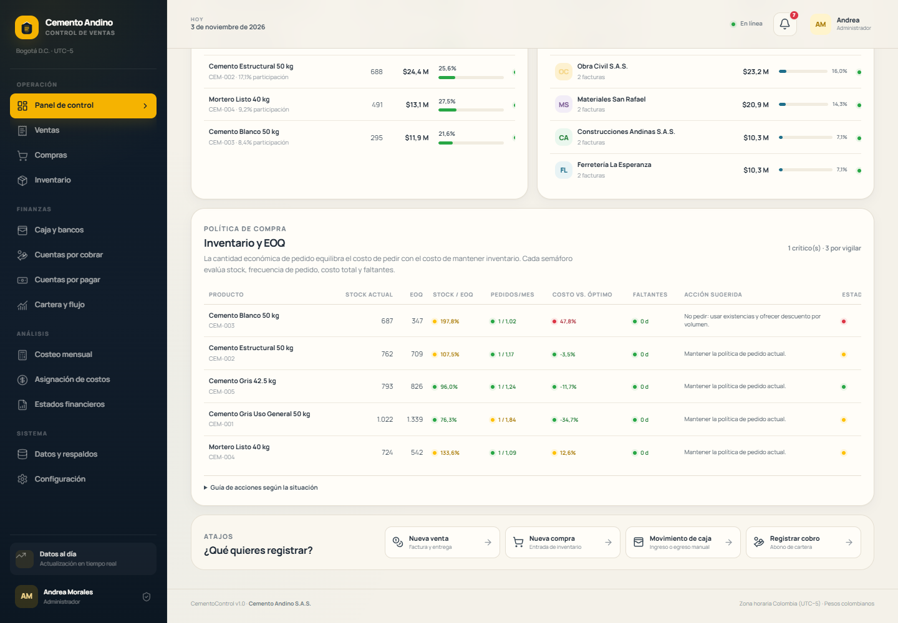
Cada fila evalúa stock/EOQ, pedidos, costo y faltantes.Lectura del EOQ: el sistema estima la demanda con las ventas de los últimos 90 días. Si el stock está por debajo del 50 % del EOQ, sugiere pedir ya; si está muy por encima, sugiere usar existencias antes de volver a comprar.
3. Ventas
En Ventas se registran las facturas de despacho. El listado permite filtrar por mes, estado o texto, y muestra total, saldo, vencimiento y estado de cartera.
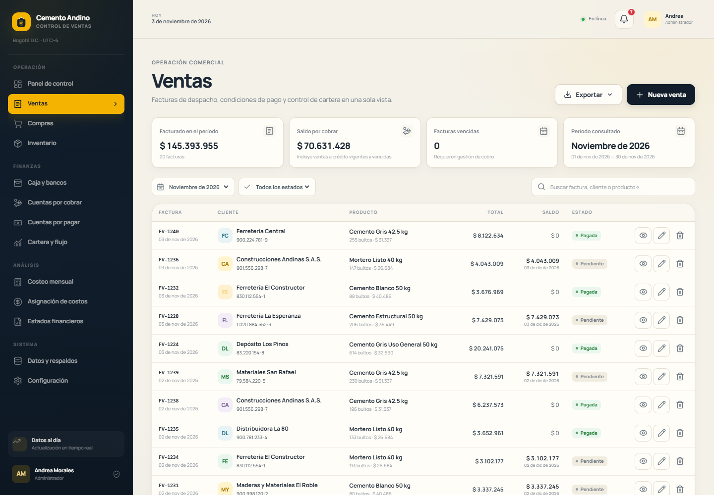
Listado de ventas con filtros, estados y acciones.Las acciones de cada fila son:
- Ver factura: abre el documento, desde donde puedes descargar PDF o PNG.
- Editar: disponible para ventas sin abonos registrados.
- Eliminar: revierte inventario y movimientos de caja; si la venta tiene abonos, el sistema lo impide para conservar el historial.
Crear una venta
Pulsa Nueva venta. El formulario se divide en tres secciones.
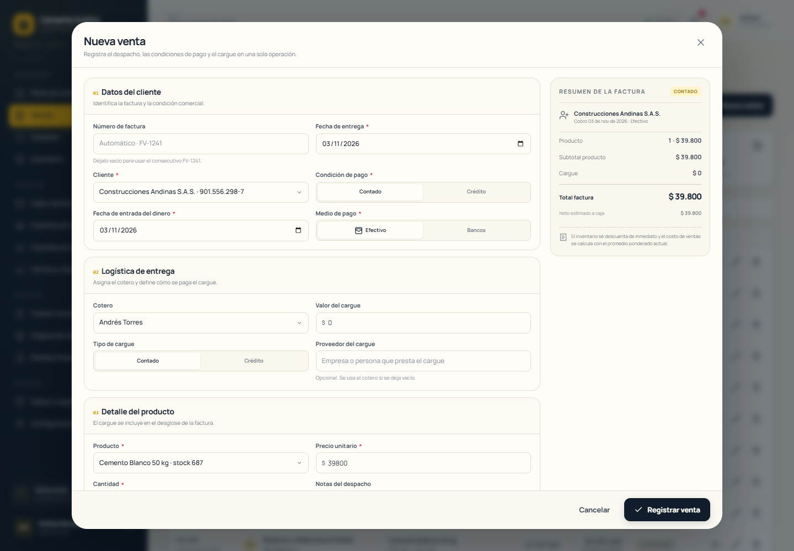
Formulario de venta con resumen lateral de la factura.01 · Datos del cliente
- El número de factura es automático y se puede editar. Si dejas el campo vacío, se asigna el siguiente consecutivo.
- Selecciona Fecha de entrega.
- Elige un cliente existente o pulsa + Registrar cliente nuevo para crearlo sin salir del formulario.
- Define Contado o Crédito. Para crédito es obligatorio indicar el vencimiento.
- Indica la fecha de entrada del dinero y el medio. Si eliges Bancos, el sistema calcula el 4x1000 sobre el total y lo registra como egreso.
02 · Logística de entrega
- Selecciona un cotero o crea uno nuevo.
- Escribe el valor del cargue, que se suma al desglose de la factura.
- Escoge si el cargue es Contado o Crédito. Si es crédito, se crea automáticamente una cuenta por pagar al proveedor del servicio.
- Puedes indicar el proveedor del cargue; si lo dejas vacío se usa el cotero.
03 · Detalle del producto
- Selecciona el producto. El sistema muestra el stock disponible y propone el precio de venta.
- Ajusta cantidad y precio.
- El resumen lateral muestra subtotal, cargue, total, 4x1000 estimado, saldo a cartera y margen estimado.
- Revisa los campos marcados con asterisco y pulsa Registrar venta.
Al guardar, el inventario se descuenta de inmediato y el costo de ventas se calcula con el costo promedio vigente.
Documento de venta
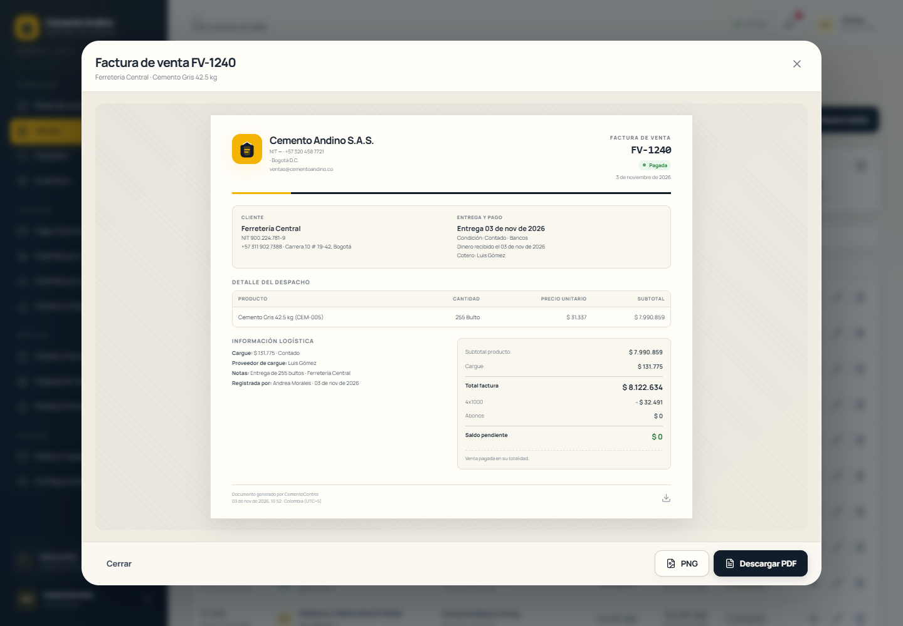
Vista de la factura. Los botones PNG y Descargar PDF se encuentran en el pie.El documento incluye datos del cliente, entrega, condiciones, producto, cargue, notas, abonos registrados y saldos. Los archivos se generan con el nombre de la factura.
4. Compras
El módulo Compras registra la entrada de producto y capitaliza el flete y el descargue en el costo unitario. El listado muestra costo total, saldo y estado del crédito.
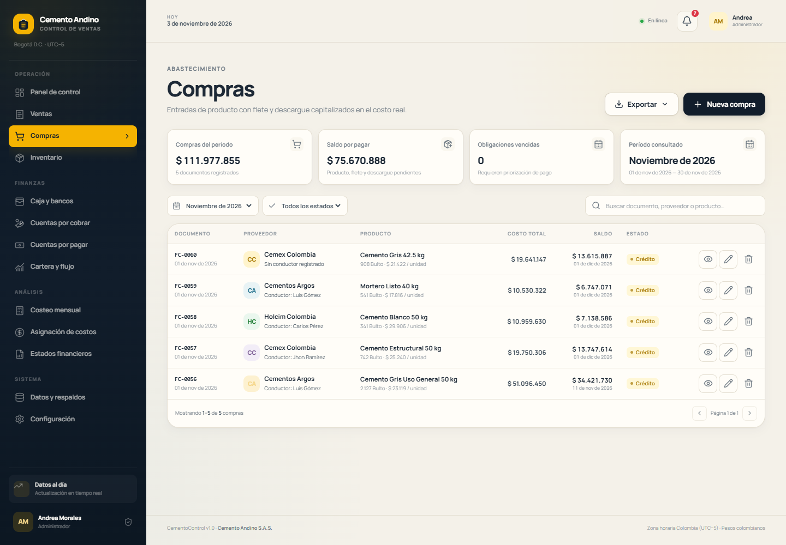
Compras del período con proveedor, producto y saldo.Crear una compra
Pulsa Nueva compra.
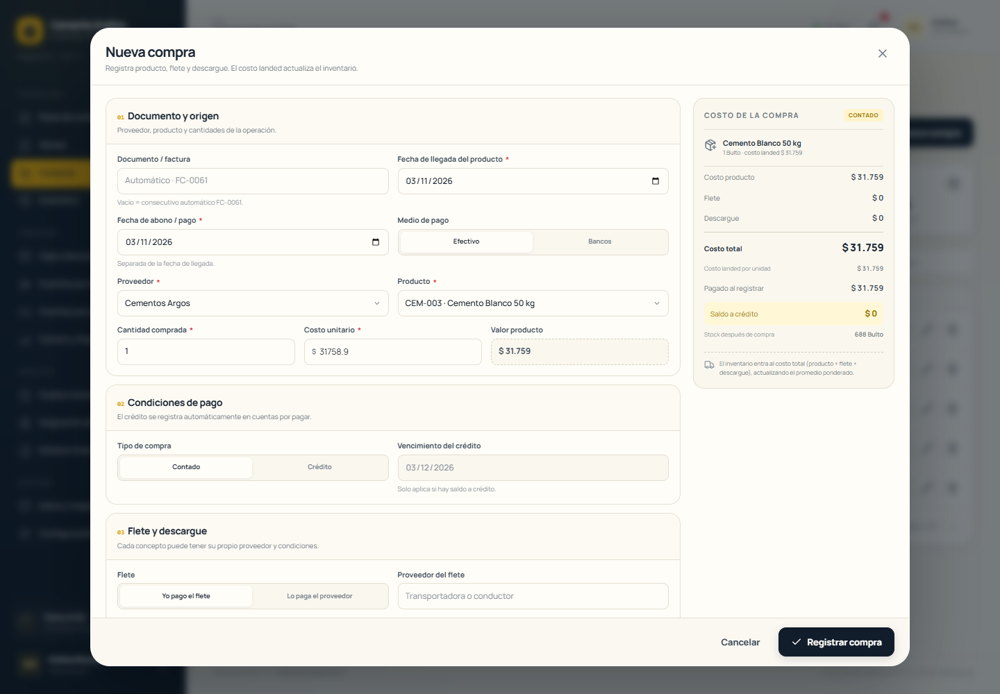
Formulario de compra con costo landed y desglose de pagos.01 · Documento y origen
- Documento automático editable.
- Fecha de llegada del producto y fecha de abono/pago separadas.
- Proveedor y producto existentes, o creación de ambos en el mismo formulario.
- Cantidad y costo unitario.
- Medio de pago.
02 · Condiciones de pago
- Contado: se registra el pago completo al guardar.
- Crédito: permite un abono inicial y una fecha de vencimiento. El saldo se registra en cuentas por pagar.
03 · Flete y descargue
- Indica si el flete lo paga el negocio o el proveedor.
- Si lo paga el negocio, registra conductor, valor, contado/crédito y anticipo.
- Registra el descargue, su proveedor y si es contado o crédito.
- Cada concepto a crédito genera su propia obligación, con proveedor y vencimiento.
El resumen de la derecha muestra costo del producto, flete, descargue, costo total, costo landed por unidad, pagado al registrar y saldo a crédito.
Costo landed: el costo que entra al inventario es la suma de producto + flete + descargue. Así el margen refleja el costo real de tener el cemento en bodega.
5. Inventario y ajustes
Inventario muestra existencias, costo promedio, precio, margen, valor total y semáforo EOQ. Las compras, ventas y ajustes actualizan el stock automáticamente.
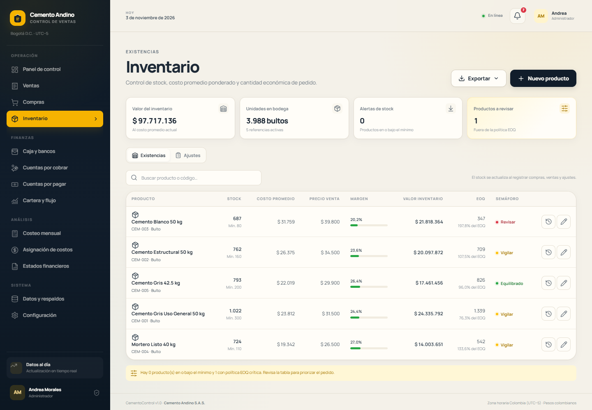
Existencias con costo promedio ponderado y estado de la política EOQ.Kardex
Pulsa el icono de historial de un producto para abrir su Kardex: fecha, tipo, referencia, cantidad, costo y saldo acumulado.
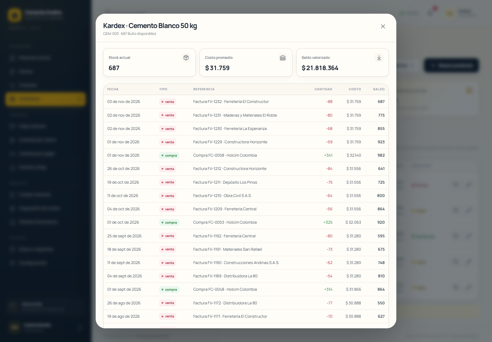
Historial de movimientos y saldo valorizado.Ajustes
En la pestaña Ajustes registra entradas o salidas que no corresponden a compras o ventas: mermas, daños, correcciones o reposiciones.
- Pulsa Registrar ajuste.
- Selecciona producto, tipo y cantidad.
- Escribe el motivo, que es obligatorio.
- Confirma.
El sistema recalcula el stock y el costo promedio. Para las salidas no se permite retirar más de lo disponible.
6. Caja y bancos
Caja y bancos muestra el saldo disponible, el flujo del período y todos los movimientos. La parte superior separa efectivo y bancos.
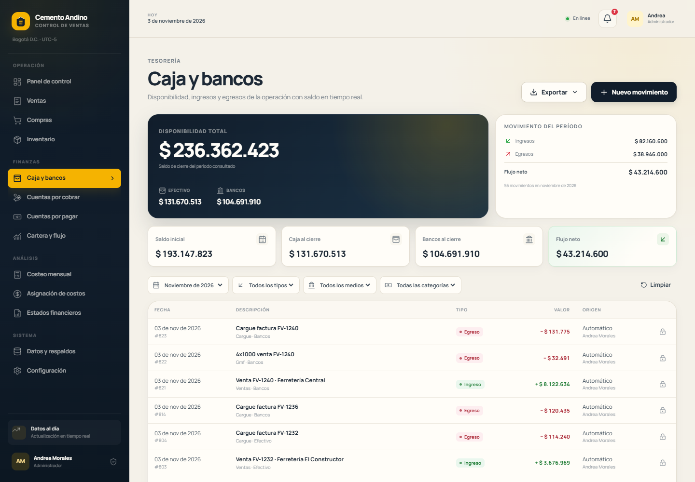
Disponibilidad, flujo del período y movimientos detallados.- Filtra por período, tipo (ingreso/egreso), medio y categoría.
- Los movimientos automáticos (ventas, compras, abonos y pagos) llevan candado. Se editan desde su operación de origen para conservar la trazabilidad.
- Usa Nuevo movimiento para ingresos o egresos manuales como nómina, servicios o aportes.
- Exporta la caja a Excel o CSV desde Exportar.
Los movimientos manuales no modifican cartera ni inventario. Si necesitas afectar una factura, usa cobros o pagos en cartera.
7. Cuentas por cobrar
Cuentas por cobrar concentra las facturas pendientes a crédito. Muestra cartera total, vencida, próximos vencimientos y recaudo del mes.
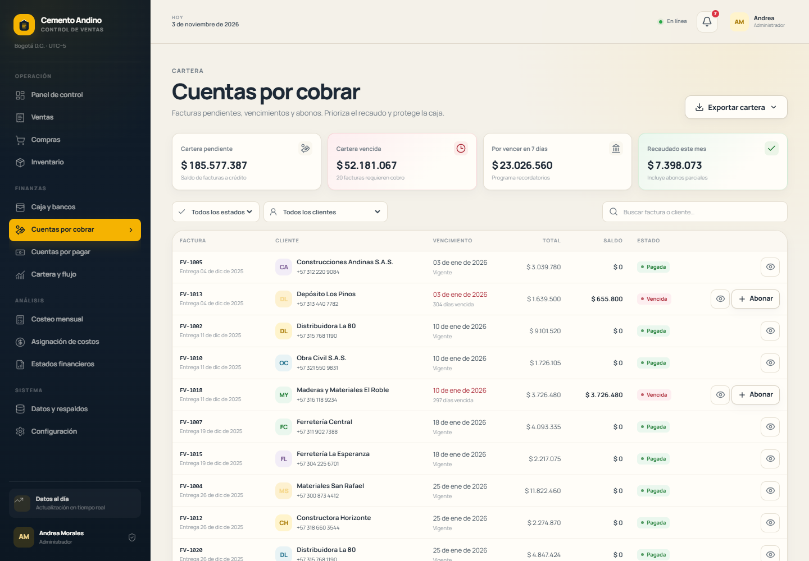
Resumen y facturas pendientes con filtros por cliente y estado.- Filtra por estado (
Pendiente,Por vencer,Vencida,Pagada), cliente o número de factura. - Pulsa Abonar en una factura para registrar un cobro total o parcial.
- Pulsa el ojo para ver la cuenta y su historial de abonos.
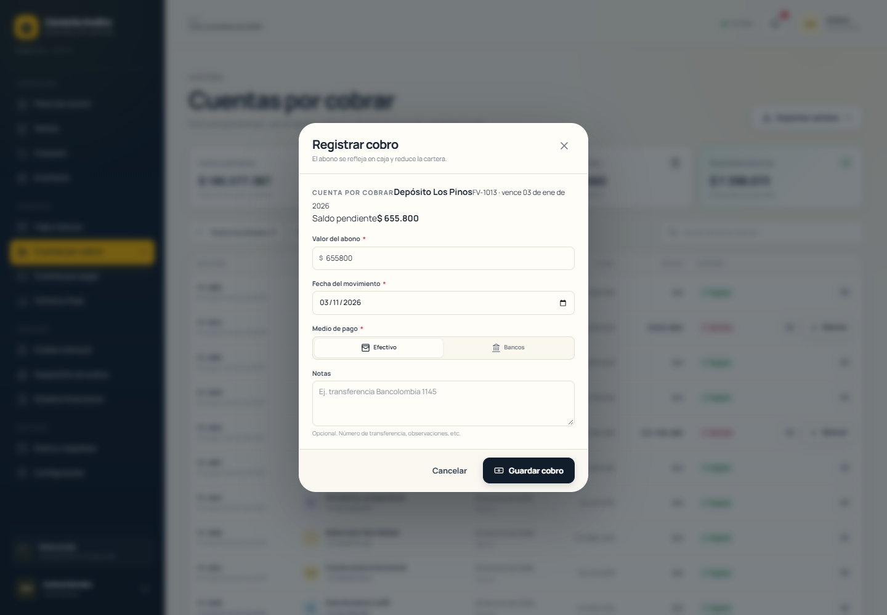
Registro de un abono con medio de pago y 4x1000.El formulario de cobro muestra el saldo pendiente, la fecha, el medio y el 4x1000 estimado si el pago es por bancos. Al guardar, el abono aparece en caja y el saldo de la factura se actualiza.
Si una factura tiene abonos, no podrás editar ni eliminar la venta original. Esto protege el historial de recaudo.
8. Cuentas por pagar
Cuentas por pagar reúne las obligaciones generadas por compras de producto, flete, descargue y cargue.
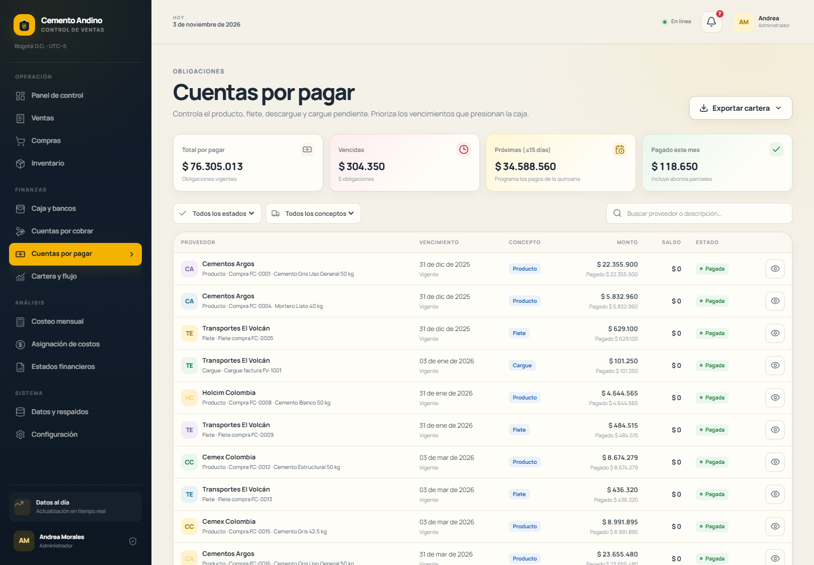
Obligaciones por proveedor, concepto y vencimiento.- Filtra por estado, concepto o proveedor.
- La columna Saldo muestra lo que falta por pagar.
- Pulsa Pagar para registrar un pago total o parcial. El egreso se registra en caja o bancos.
- Pulsa el ojo para consultar el detalle y los pagos anteriores.
Las obligaciones vencidas y próximas se incluyen en las alertas del panel. Prioriza los pagos según la disponibilidad de caja.
9. Cartera y flujo de caja
Cartera y flujo de caja es la vista consolidada de CxC y CxP.
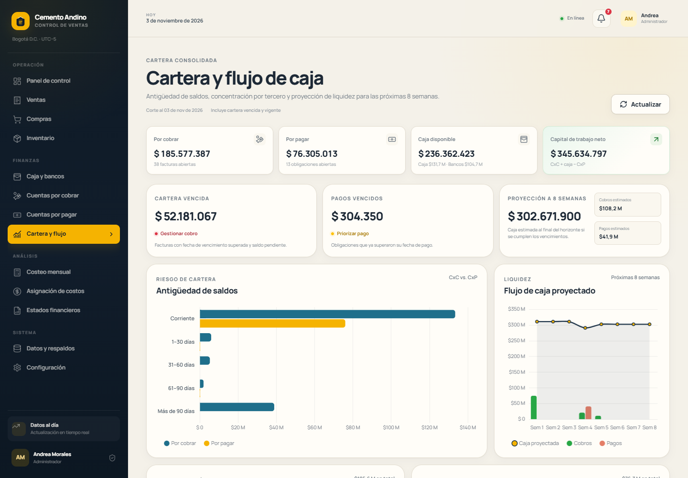
Antigüedad de saldos, proyección de liquidez y principales terceros.Incluye:
- Total por cobrar, por pagar y capital de trabajo neto.
- Antigüedad de saldos por rangos: corriente, 1–30, 31–60, 61–90 y más de 90 días.
- Proyección de caja a 8 semanas, agrupando cobros y pagos por vencimiento. Los saldos vencidos se ubican en la primera semana.
- Principales deudores y acreedores.
La proyección es un escenario base de gestión. No descuenta impuestos futuros ni movimientos no registrados.
10. Costeo mensual
Costeo mensual responde cuánto cuesta realmente vender cada producto y cuánto queda de utilidad después de costos indirectos.
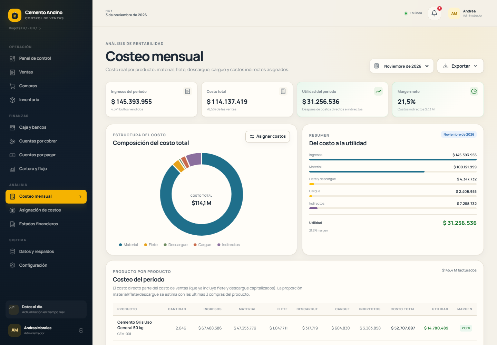
Composición del costo, margen y detalle por producto.- Selecciona el mes.
- Revisa la composición del costo total.
- La tabla por producto presenta ingresos, material, flete, descargue, cargue, indirectos, costo total, utilidad y margen.
- La distribución de costos indirectos se configura en Asignación de costos.
- Exporta el reporte a Excel o CSV.
Los costos indirectos se pueden asignar por volumen (bultos vendidos) o por valor de venta. El 4x1000 registrado en caja se incorpora automáticamente.
11. Estados financieros
En Estados financieros se consultan tres reportes por mes:
- Estado de resultados: ingresos, costo de ventas, utilidad bruta, gastos operativos y utilidad neta.
- Balance general: activos, pasivos y patrimonio.
- Flujo de caja: saldo inicial, ingresos, egresos, flujo neto y saldo final.
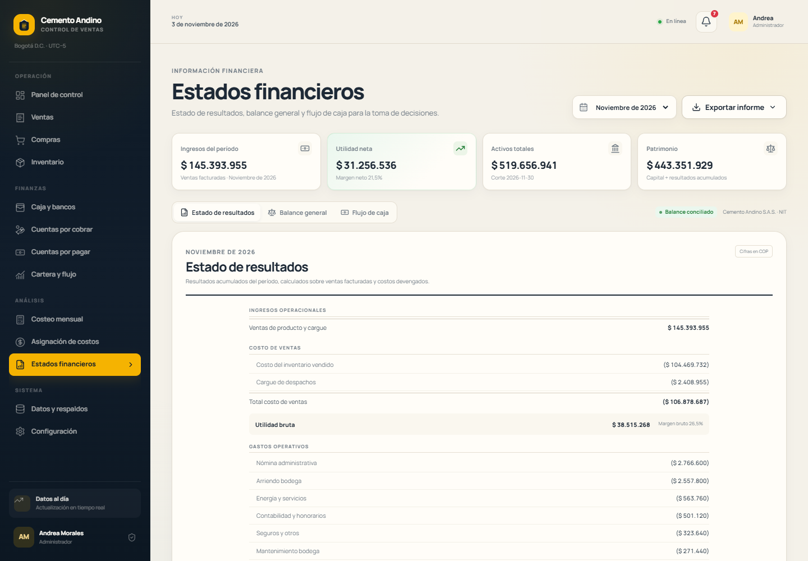
Estado de resultados del período.Puedes descargar el informe completo en PDF ejecutivo o Excel completo. El PDF incluye las tres secciones.
El balance es un reporte gerencial: incluye una línea de conciliación de resultados acumulados para que activos, pasivos y patrimonio cuadren con la operación registrada.
12. Datos y respaldos
Datos y respaldos permite exportar, importar y proteger la información.
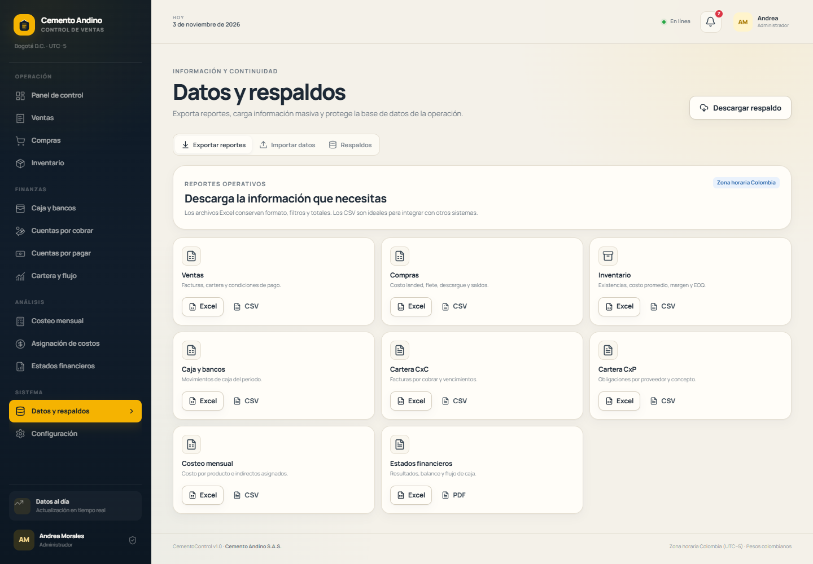
Exportaciones por módulo y acceso a importación y respaldos.Exportar
- Descarga Excel o CSV por módulo.
- Estados financieros también se pueden descargar en PDF.
- El botón Descargar respaldo (solo administrador) genera un JSON completo.
Importar
- Abre la pestaña Importar datos.
- Descarga la plantilla del módulo.
- Completa el archivo en Excel o CSV.
- Carga el archivo y pulsa Validar archivo.
- Revisa la previsualización y los errores.
- Si todo está correcto, pulsa Importar N filas.
Importa primero clientes, proveedores y productos; después compras y ventas. La importación no escribe nada si la validación encuentra errores.
Respaldos
- Crear respaldo ahora: genera un archivo JSON con toda la base.
- Respaldo Excel: útil para auditoría.
- Restaurar: reemplaza la base actual. El sistema crea automáticamente una copia pre-restauración y cierra las sesiones.
- Los respaldos automáticos se guardan una vez al día después de la hora configurada.
Descarga un respaldo antes de cualquier restauración o actualización importante. Los respaldos contienen información sensible; protégelos.
13. Configuración
Solo el administrador puede entrar a Configuración.
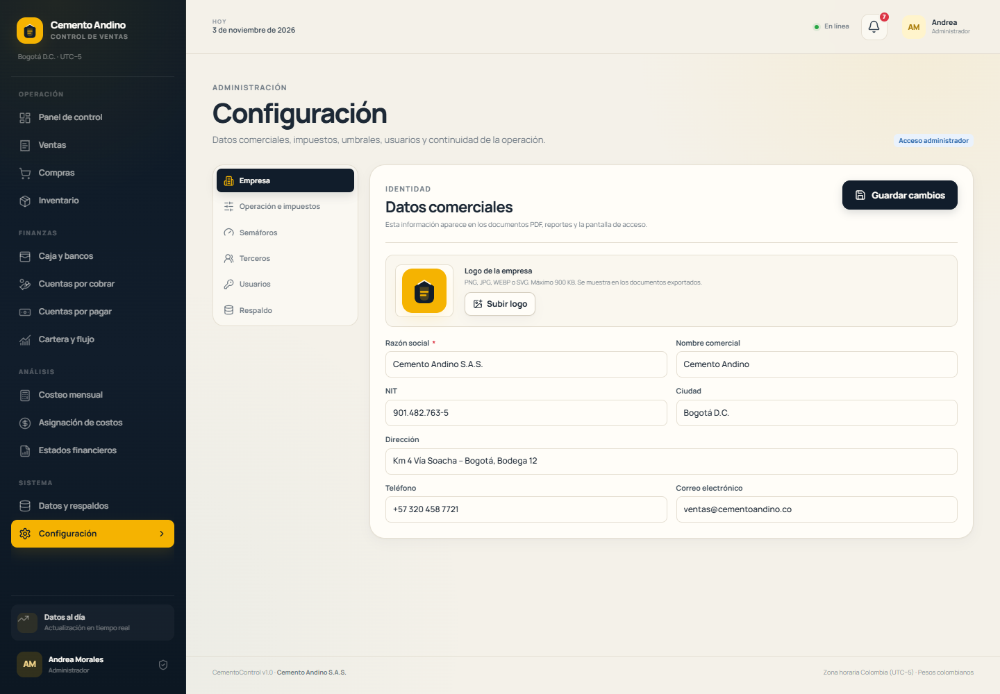
Datos comerciales, logo y configuración de la empresa.Empresa
Nombre, NIT, dirección, ciudad, teléfono, correo y logo. Esta información aparece en los documentos y reportes.
Operación e impuestos
- Saldos iniciales de caja, bancos y capital.
- Tarifa del 4x1000 y configuración de IVA.
- Prefijos de facturas y compras.
- Parámetros por defecto de inventario.
Semáforos
Ajusta los umbrales de crecimiento, margen, cobertura de caja, cartera vencida, rentabilidad, participación del material, concentración de clientes y cobertura de inventario. Los cambios se reflejan en el panel y en las alertas.
Terceros
Crea, edita y elimina clientes, proveedores y coteros. Si un tercero tiene movimientos asociados, el sistema impide su eliminación.
Usuarios
Crea usuarios con rol de administrador, vendedor o contador, restablece contraseñas y activa/desactiva cuentas. No es posible desactivar el propio usuario ni dejar la empresa sin administrador.
Respaldo
Habilita o deshabilita el respaldo automático, define la hora y la retención. Aquí también ves el último respaldo y las copias guardadas.
Los cambios de saldos iniciales alteran la disponibilidad de caja y el balance. Hazlos solo al iniciar la operación o durante un cierre contable.
14. Uso desde el celular
La interfaz se adapta a pantallas pequeñas. En el celular, el menú lateral se convierte en una barra inferior con los módulos principales y un botón Más con el resto de opciones.
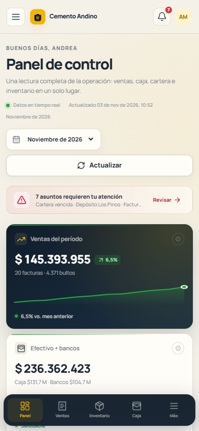
Panel de control en un teléfono.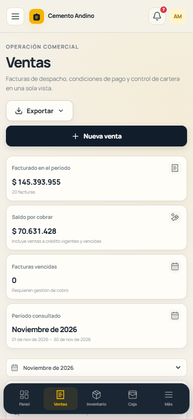
Listado de ventas adaptado a pantalla pequeña.- Los formularios se muestran en pantalla completa con campos táctiles.
- Las tablas se convierten en tarjetas para mantener la legibilidad.
- Para descargar PDF o PNG desde el celular, abre el registro y pulsa el botón correspondiente.
- Si la app está en la red local, accede con la IP del PC y el puerto configurado.
15. Buenas prácticas y preguntas frecuentes
¿Cada cuánto debo registrar?
Registra ventas, compras y cobros el mismo día. Un dato oportuno hace que la caja y la cartera sean confiables.
¿Qué pasa si me equivoco?
- Venta: edítala si no tiene abonos; si ya tiene, registra el ajuste en cartera y consulta con el administrador.
- Compra: edítala mientras el inventario no se haya consumido por ventas posteriores.
- Cobro/pago: lo más seguro es registrar la corrección con administración; no borres movimientos automáticos.
- Inventario: registra un ajuste con el motivo real.
¿Por qué no puedo eliminar una compra?
Porque el producto ya fue vendido y el stock quedaría negativo. En ese caso edita la compra o registra una compra de ajuste y regulariza con el administrador.
¿Por qué el margen de un producto es diferente al de caja?
El margen usa costo promedio y valor devengado. La caja mide cuándo entra y sale el dinero. Ambas lecturas son necesarias: una mide rentabilidad, la otra liquidez.
¿Qué hago si la caja no coincide con el banco?
Revisa los movimientos del período en Caja y bancos, verifica los abonos y pagos y registra un movimiento manual conciliatorio si corresponde. La aplicación no reemplaza la conciliación bancaria formal.
¿Cómo cambio mi contraseña?
Abre el menú de tu perfil, arriba a la derecha, y elige Seguridad de la cuenta.
¿Dónde están mis respaldos?
En la carpeta data/backups de la instalación. También puedes descargarlos desde Datos y respaldos.
Recomendaciones de control
- Revisa el panel al inicio del día.
- Cobra la cartera vencida antes de despachar nuevas facturas a crédito.
- No permitas ventas a clientes morosos sin autorización.
- Registra el cargue y el descargue: forman parte del costo real.
- Compara mensualmente el costo de compra con el precio de venta.
- Cierra el mes revisando caja, inventario y cartera antes de generar los estados financieros.
- Descarga un respaldo al final de cada semana.
Soporte: consulta los documentos técnicos del proyecto o contacta al administrador del sistema.
CementoControl · Hecho para operaciones de cemento con datos claros y decisiones a tiempo.